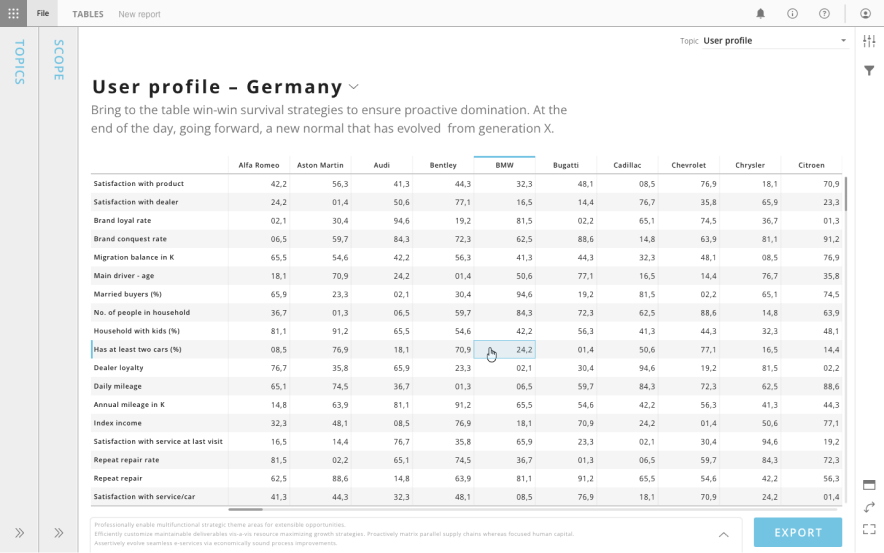
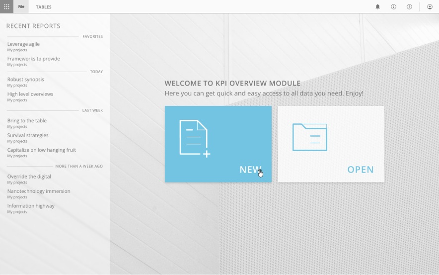
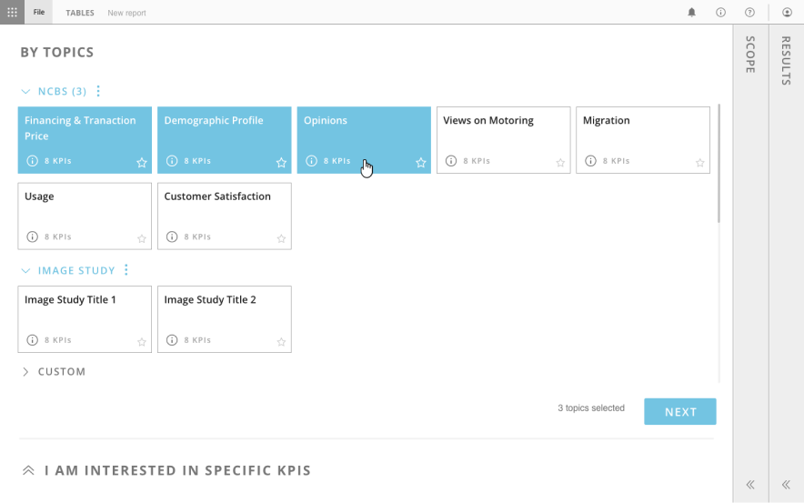
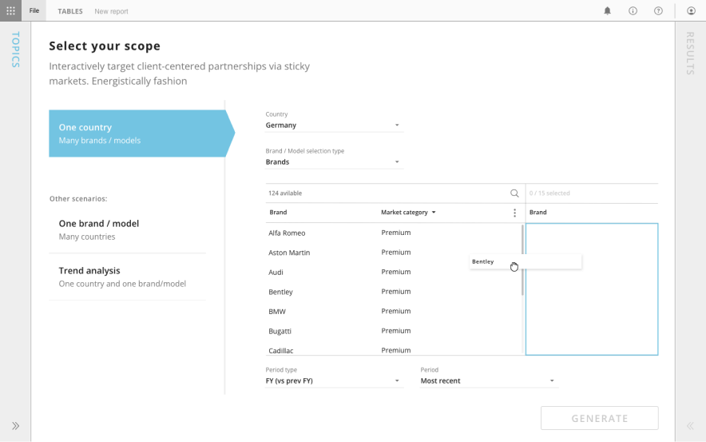
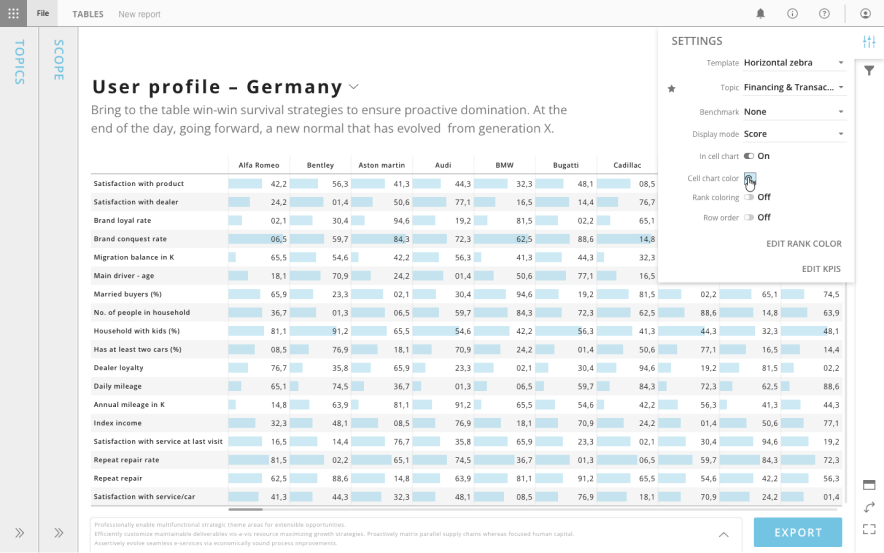
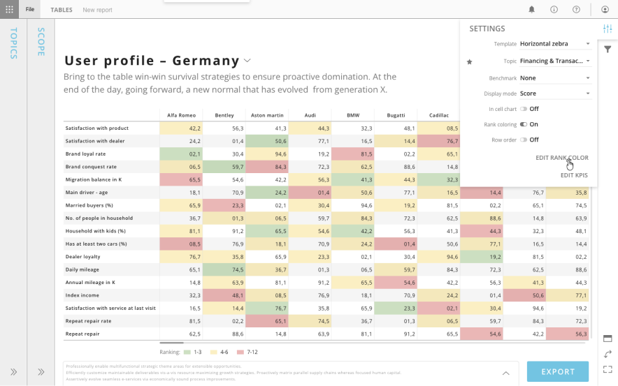

Tables
Tabular reporting for data-driven stakeholders

Overview
Tables was a module inside Analyze (now Reports) that let people browse, work with and export raw cross-tabulation data straight from the Report Viewer, without needing authoring rights. As Head of Design I came up with it and designed it from scratch.
Challenge
Before Tables, the Viewer could only show slide-based reports built in Compose. If a stakeholder wanted the raw numbers behind an analysis, we had to give them full authoring access, which dropped them into a complicated tool and risked them changing something by accident. It was a genuine friction point: people who only wanted to read data were being pushed into a tool built for analysts. What we needed was something clean that treated tabular data as a proper reporting format in its own right.
My role
I designed Tables as a new kind of report page sitting alongside slides in the Viewer. Rather than a fixed canvas, a table page showed the full cross-tabulation with scrolling in both directions, clean formatting, titles and footnotes. It had to feel effortless for someone just reading the numbers while still doing the useful things: sorting, freezing columns, filtering by parameter and exporting to Excel. I worked closely with the team to keep it consistent with the rest of the Viewer, so moving between slides and tables never felt like a jolt.
Outcome
Tables filled a real gap in the reporting workflow. Authors ended up with the full set: polished visuals for telling a story in Compose, and raw data for digging in via Tables. Stakeholders could finally browse, filter and export what they needed without ever opening the authoring tools.
What's next
As the capabilities of Reports grew, we introduced a way to view tables created in Reports directly, and retired the Tables module.




